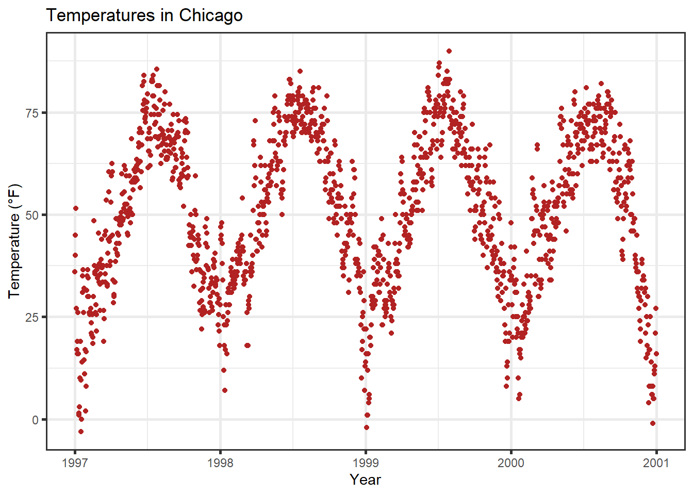

Attaching package: 'gridExtra'The following object is masked from 'package:dplyr':
combineYou can change the entire look of the plots by using themes. {ggplot2} comes with eight built-in themes:
Attaching package: 'gridExtra'The following object is masked from 'package:dplyr':
combineThere are several packages that provide additional themes, some even with different default color palettes. As an example, Jeffrey Arnold has put together the library {ggthemes} with several custom themes imitating popular designs. For a list you can visit the {ggthemes} package site. Without any coding you can just adapt several styles, some of them well known for their style and aesthetics.
Here is an example copying the plotting style in the The Economist magazine by using theme_economist() and scale_color_economist():
library(ggthemes)
ggplot(chic, aes(x = date, y = temp, color = season)) +
geom_point() +
labs(x = "Year", y = "Temperature (°F)") +
ggtitle("Ups and Downs of Chicago's Daily Temperatures") +
theme_economist() +
scale_color_economist(name = NULL)Another example is the plotting style of Tufte, a minimal ink theme based on Edward Tufte’s book The Visual Display of Quantitative Information. This is the book that popularized Minard’s chart depicting Napoleon’s march on Russia as one of the best statistical drawings ever created. Tufte’s plots became famous due to the purism in their style. But see yourself:
library(dplyr)
chic_2000 <- filter(chic, year == 2000)
ggplot(chic_2000, aes(x = temp, y = o3)) +
geom_point() +
labs(x = "Temperature (°F)", y = "Ozone") +
ggtitle("Temperature and Ozone Levels During the Year 2000 in Chicago") +
theme_tufte()I reduced the number of data points here simply to fit it Tufte’s minimalism style. If you like the way of plotting have a look on this blog entry creating several Tufte plots in R.
Another neat packages with modern themes and a preset of non-default fonts is the {hrbrthemes} package by Bob Rudis with several light but also dark themes:
library(hrbrthemes)
ggplot(chic, aes(x = temp, y = o3)) +
geom_point(aes(color = dewpoint), show.legend = FALSE) +
labs(x = "Temperature (°F)", y = "Ozone") +
ggtitle("Temperature and Ozone Levels in Chicago")It is incredibly easy to change the settings of all the text elements at once. All themes come with an argument called base_family:
g <- ggplot(chic, aes(x = date, y = temp)) +
geom_point(color = "firebrick") +
labs(x = "Year", y = "Temperature (°F)",
title = "Temperatures in Chicago")
g + theme_bw(base_family = "Playfair Display")The theme_*() functions also come with several other base_* arguments. If you have a closer look at the default theme (see chapter “Create and Use Your Custom Theme” below) you will notice that the sizes of all the elements are relative (rel()) to the base_size. As a result, you can simply change the base_size if you want to increase readability of your plots:
g + theme_bw(base_size = 30, base_family = "Roboto Condensed")Similarly, you can change the size of all elements of type line and rect:
g + theme_bw(base_line_size = 1, base_rect_size = 1)
If you want to change the theme for an entire session you can use theme_set as in theme_set(theme_bw()). The default is called theme_gray (or theme_gray). If you wanted to create your own custom theme, you could extract the code directly from the gray theme and modify. Note that the rel() function change the sizes relative to the base_size.
theme_grayfunction (base_size = 11, base_family = "", base_line_size = base_size/22,
base_rect_size = base_size/22)
{
half_line <- base_size/2
t <- theme(line = element_line(colour = "black", linewidth = base_line_size,
linetype = 1, lineend = "butt"), rect = element_rect(fill = "white",
colour = "black", linewidth = base_rect_size, linetype = 1),
text = element_text(family = base_family, face = "plain",
colour = "black", size = base_size, lineheight = 0.9,
hjust = 0.5, vjust = 0.5, angle = 0, margin = margin(),
debug = FALSE), axis.line = element_blank(), axis.line.x = NULL,
axis.line.y = NULL, axis.text = element_text(size = rel(0.8),
colour = "grey30"), axis.text.x = element_text(margin = margin(t = 0.8 *
half_line/2), vjust = 1), axis.text.x.top = element_text(margin = margin(b = 0.8 *
half_line/2), vjust = 0), axis.text.y = element_text(margin = margin(r = 0.8 *
half_line/2), hjust = 1), axis.text.y.right = element_text(margin = margin(l = 0.8 *
half_line/2), hjust = 0), axis.text.r = element_text(margin = margin(l = 0.8 *
half_line/2, r = 0.8 * half_line/2), hjust = 0.5),
axis.ticks = element_line(colour = "grey20"), axis.ticks.length = unit(half_line/2,
"pt"), axis.ticks.length.x = NULL, axis.ticks.length.x.top = NULL,
axis.ticks.length.x.bottom = NULL, axis.ticks.length.y = NULL,
axis.ticks.length.y.left = NULL, axis.ticks.length.y.right = NULL,
axis.minor.ticks.length = rel(0.75), axis.title.x = element_text(margin = margin(t = half_line/2),
vjust = 1), axis.title.x.top = element_text(margin = margin(b = half_line/2),
vjust = 0), axis.title.y = element_text(angle = 90,
margin = margin(r = half_line/2), vjust = 1), axis.title.y.right = element_text(angle = -90,
margin = margin(l = half_line/2), vjust = 1), legend.background = element_rect(colour = NA),
legend.spacing = unit(2 * half_line, "pt"), legend.spacing.x = NULL,
legend.spacing.y = NULL, legend.margin = margin(half_line,
half_line, half_line, half_line), legend.key = NULL,
legend.key.size = unit(1.2, "lines"), legend.key.height = NULL,
legend.key.width = NULL, legend.key.spacing = unit(half_line,
"pt"), legend.text = element_text(size = rel(0.8)),
legend.title = element_text(hjust = 0), legend.ticks.length = rel(0.2),
legend.position = "right", legend.direction = NULL, legend.justification = "center",
legend.box = NULL, legend.box.margin = margin(0, 0, 0,
0, "cm"), legend.box.background = element_blank(),
legend.box.spacing = unit(2 * half_line, "pt"), panel.background = element_rect(fill = "grey92",
colour = NA), panel.border = element_blank(), panel.grid = element_line(colour = "white"),
panel.grid.minor = element_line(linewidth = rel(0.5)),
panel.spacing = unit(half_line, "pt"), panel.spacing.x = NULL,
panel.spacing.y = NULL, panel.ontop = FALSE, strip.background = element_rect(fill = "grey85",
colour = NA), strip.clip = "inherit", strip.text = element_text(colour = "grey10",
size = rel(0.8), margin = margin(0.8 * half_line,
0.8 * half_line, 0.8 * half_line, 0.8 * half_line)),
strip.text.x = NULL, strip.text.y = element_text(angle = -90),
strip.text.y.left = element_text(angle = 90), strip.placement = "inside",
strip.placement.x = NULL, strip.placement.y = NULL, strip.switch.pad.grid = unit(half_line/2,
"pt"), strip.switch.pad.wrap = unit(half_line/2,
"pt"), plot.background = element_rect(colour = "white"),
plot.title = element_text(size = rel(1.2), hjust = 0,
vjust = 1, margin = margin(b = half_line)), plot.title.position = "panel",
plot.subtitle = element_text(hjust = 0, vjust = 1, margin = margin(b = half_line)),
plot.caption = element_text(size = rel(0.8), hjust = 1,
vjust = 1, margin = margin(t = half_line)), plot.caption.position = "panel",
plot.tag = element_text(size = rel(1.2), hjust = 0.5,
vjust = 0.5), plot.tag.position = "topleft", plot.margin = margin(half_line,
half_line, half_line, half_line), complete = TRUE)
ggplot_global$theme_all_null %+replace% t
}
<bytecode: 0x0000025b7c667820>
<environment: namespace:ggplot2>Now, let us modify the default theme function and have a look at the result:
theme_2hin <- function (base_size = 12, base_family = "Roboto Condensed") {
half_line <- base_size/2
theme(
line = element_line(color = "black", linewidth = .5,
linetype = 1, lineend = "butt"),
rect = element_rect(fill = "white", color = "black",
linewidth = .5, linetype = 1),
text = element_text(family = base_family, face = "plain",
color = "black", size = base_size,
lineheight = .9, hjust = .5, vjust = .5,
angle = 0, margin = margin(), debug = FALSE),
axis.line = element_blank(),
axis.line.x = NULL,
axis.line.y = NULL,
axis.text = element_text(size = base_size * 1.1, color = "gray30"),
axis.text.x = element_text(margin = margin(t = .8 * half_line/2),
vjust = 1),
axis.text.x.top = element_text(margin = margin(b = .8 * half_line/2),
vjust = 0),
axis.text.y = element_text(margin = margin(r = .8 * half_line/2),
hjust = 1),
axis.text.y.right = element_text(margin = margin(l = .8 * half_line/2),
hjust = 0),
axis.ticks = element_line(color = "gray30", linewidth = .7),
axis.ticks.length = unit(half_line / 1.5, "pt"),
axis.ticks.length.x = NULL,
axis.ticks.length.x.top = NULL,
axis.ticks.length.x.bottom = NULL,
axis.ticks.length.y = NULL,
axis.ticks.length.y.left = NULL,
axis.ticks.length.y.right = NULL,
axis.title.x = element_text(margin = margin(t = half_line),
vjust = 1, size = base_size * 1.3,
face = "bold"),
axis.title.x.top = element_text(margin = margin(b = half_line),
vjust = 0),
axis.title.y = element_text(angle = 90, vjust = 1,
margin = margin(r = half_line),
size = base_size * 1.3, face = "bold"),
axis.title.y.right = element_text(angle = -90, vjust = 0,
margin = margin(l = half_line)),
legend.background = element_rect(color = NA),
legend.spacing = unit(.4, "cm"),
legend.spacing.x = NULL,
legend.spacing.y = NULL,
legend.margin = margin(.2, .2, .2, .2, "cm"),
legend.key = element_rect(fill = "gray95", color = "white"),
legend.key.size = unit(1.2, "lines"),
legend.key.height = NULL,
legend.key.width = NULL,
legend.text = element_text(size = rel(.8)),
legend.text.align = NULL,
legend.title = element_text(hjust = 0),
legend.title.align = NULL,
legend.position = "right",
legend.direction = NULL,
legend.justification = "center",
legend.box = NULL,
legend.box.margin = margin(0, 0, 0, 0, "cm"),
legend.box.background = element_blank(),
legend.box.spacing = unit(.4, "cm"),
panel.background = element_rect(fill = "white", color = NA),
panel.border = element_rect(color = "gray30",
fill = NA, linewidth = .7),
panel.grid.major = element_line(color = "gray90", linewidth = 1),
panel.grid.minor = element_line(color = "gray90", linewidth = .5,
linetype = "dashed"),
panel.spacing = unit(base_size, "pt"),
panel.spacing.x = NULL,
panel.spacing.y = NULL,
panel.ontop = FALSE,
strip.background = element_rect(fill = "white", color = "gray30"),
strip.text = element_text(color = "black", size = base_size),
strip.text.x = element_text(margin = margin(t = half_line,
b = half_line)),
strip.text.y = element_text(angle = -90,
margin = margin(l = half_line,
r = half_line)),
strip.text.y.left = element_text(angle = 90),
strip.placement = "inside",
strip.placement.x = NULL,
strip.placement.y = NULL,
strip.switch.pad.grid = unit(0.1, "cm"),
strip.switch.pad.wrap = unit(0.1, "cm"),
plot.background = element_rect(color = NA),
plot.title = element_text(size = base_size * 1.8, hjust = .5,
vjust = 1, face = "bold",
margin = margin(b = half_line * 1.2)),
plot.title.position = "panel",
plot.subtitle = element_text(size = base_size * 1.3,
hjust = .5, vjust = 1,
margin = margin(b = half_line * .9)),
plot.caption = element_text(size = rel(0.9), hjust = 1, vjust = 1,
margin = margin(t = half_line * .9)),
plot.caption.position = "panel",
plot.tag = element_text(size = rel(1.2), hjust = .5, vjust = .5),
plot.tag.position = "topleft",
plot.margin = margin(rep(base_size, 4)),
complete = TRUE
)
}💡 You can only overwrite the defaults for all elements you want to change. Here I listed all so you can see that you can change literally change everything!
Have a look on the modified aesthetics with its new look of panel and gridlines as well as axes ticks, texts and titles:
theme_set(theme_2hin())
ggplot(chic, aes(x = date, y = temp, color = season)) +
geom_point() + labs(x = "Year", y = "Temperature (°F)") + guides(color = "none")This way of changing the plot design is highly recommended! It allows you to quickly change any element of your plots by changing it once. You can within a few seconds plot all your results in a congruent style and adapt it to other needs (e.g. a presentation with bigger font size or journal requirements).
You can also set quick changes using theme_update():
theme_2hin <- theme_update(panel.background = element_rect(fill = "gray60"))
ggplot(chic, aes(x = date, y = temp, color = season)) +
geom_point() + labs(x = "Year", y = "Temperature (°F)") + guides(color = "none")For further exercises, we are going to use our own theme with a white filling and without the minor grid lines:
theme_2hin <- theme_update(
panel.background = element_rect(fill = "white"),
panel.grid.major = element_line(linewidth = .5),
panel.grid.minor = element_blank()
)